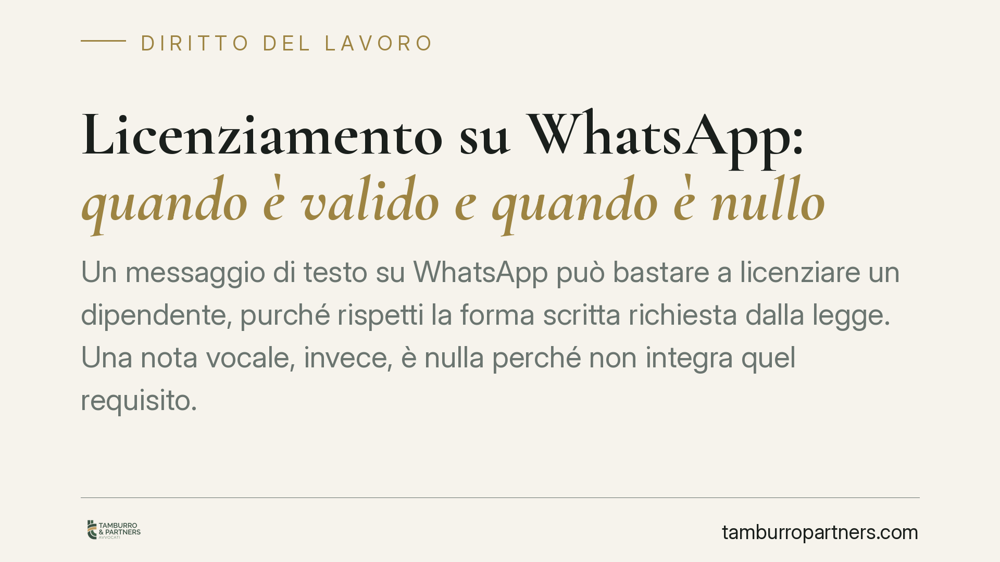

Licenziamento su WhatsApp: quando è valido e quando è nullo
Un messaggio di testo su WhatsApp può bastare a licenziare un dipendente, purché rispetti la forma scritta richiesta dalla legge. Una nota vocale, invece, è nulla perché non integra quel requisito. La distinzione non è formalistica: cambia radicalmente il regime di tutela del lavoratore e i termini entro cui reagire.

Il fatto
WhatsApp è ormai un canale ordinario di comunicazione anche nei rapporti di lavoro. Da qui la domanda ricorrente: un licenziamento intimato tramite messaggio è valido? La risposta dipende dalla forma concreta del messaggio. Un testo scritto può soddisfare i requisiti di legge; una nota vocale no.
Inquadramento normativo
L'art. 2 della L. 604/1966 impone che il licenziamento sia comunicato per iscritto, con indicazione dei motivi. Si tratta di una forma scritta richiesta *ad substantiam*: senza di essa l'atto è nullo, cioè privo di effetti, non semplicemente annullabile.
La forma scritta non coincide necessariamente con la carta. Il Codice dell'Amministrazione Digitale (D.Lgs. 82/2005, artt. 20 e 21) equipara, a determinate condizioni, il documento informatico al documento cartaceo. Su questa base alcune pronunce di merito hanno ritenuto valido il licenziamento intimato con messaggio di testo via WhatsApp, quando risultino accertabili tre elementi: provenienza certa dal datore di lavoro, contenuto scritto e leggibile, volontà inequivoca di recedere con l'indicazione dei motivi (orientamento di merito, *estremi da verificare caso per caso*).
Diverso il caso della nota vocale. L'audio non è testo scritto: manca il requisito di forma ad substantiam. Il licenziamento comunicato in questo modo è nullo, a prescindere dalla chiarezza del contenuto.
Perché la distinzione conta
La differenza tra messaggio valido e nota vocale nulla non è teorica. Incide sul regime di tutela e, soprattutto, sui termini per reagire.
Un licenziamento validamente intimato per iscritto può essere impugnato, ma entro termini di decadenza stringenti. Un licenziamento nullo per difetto di forma segue invece regole più favorevoli al lavoratore, come vediamo di seguito.
### Termini di impugnazione: attenzione a non confonderli
Per il licenziamento validamente intimato in forma scritta opera l'art. 6 della L. 604/1966: va impugnato, anche con atto stragiudiziale, entro 60 giorni dalla ricezione; l'impugnazione è inefficace se non seguita, entro i successivi 180 giorni, dal deposito del ricorso giudiziale (o dalla comunicazione alla controparte della richiesta di conciliazione o arbitrato).
Il licenziamento nullo per difetto di forma scritta – come quello comunicato con nota vocale – non è soggetto al termine di decadenza di 60 giorni. La nullità si fa valere nell'ordinario termine di prescrizione. Applicare i 60 giorni a qualunque recesso è un errore: sarebbe in contraddizione con la natura stessa della nullità.
### Le conseguenze della nullità
Accertata la nullità per difetto di forma, il lavoratore ha diritto alla tutela reintegratoria piena: reintegrazione nel posto e risarcimento del danno.
Il regime concreto dipende dalla data di assunzione. Per i rapporti sorti fino al 6 marzo 2015 si applica l'art. 18 della L. 300/1970 (Statuto dei lavoratori). Per gli assunti dal 7 marzo 2015 opera il D.Lgs. 23/2015 (contratto a tutele crescenti), che per i vizi di forma, pur con disciplina propria, prevede comunque una tutela specifica. Le differenze tra i due regimi sono rilevanti e vanno valutate sul singolo caso.
Cosa fare in concreto
- Distingui subito la forma del messaggio. Testo scritto e leggibile è cosa diversa da una nota vocale: la prima può valere come licenziamento, la seconda no.
- Conserva integralmente la comunicazione. Salva screenshot con data, orario e numero mittente; esporta la chat; non cancellare nulla. La prova della provenienza e del contenuto è decisiva.
- Verifica provenienza e contenuto. Accerta che il messaggio provenga da chi ha il potere di licenziare e che contenga una volontà inequivoca di recesso con i motivi.
- Non lasciar decorrere i termini sul licenziamento scritto. Se la comunicazione è per iscritto, ricorda i 60 giorni per l'impugnazione e i successivi 180 per l'azione giudiziale.
- Fai valutare il caso prima di agire. Il confine tra forma valida e nullità è tecnico: è opportuno far esaminare la comunicazione da un professionista prima di assumere decisioni.
La regola di fondo resta semplice: ciò che è scritto può reggere, ciò che è solo detto no. Ma la qualificazione corretta dell'atto – e del regime applicabile – richiede un esame puntuale.
Ogni storia di lavoro ha i suoi tempi.
Se gestisci HR e vuoi un confronto su contenzioso, ispezioni o licenziamenti, scrivi allo studio. Ti rispondiamo entro un giorno lavorativo.